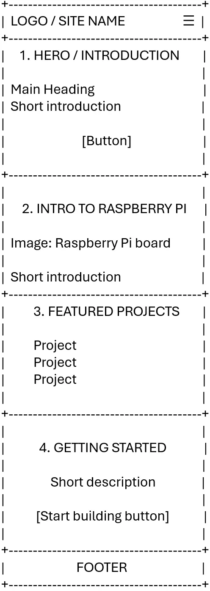
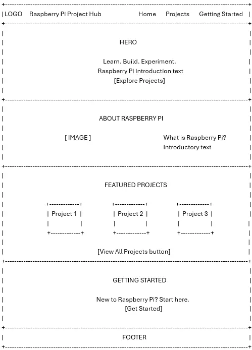

Site Name
Raspberry Pi Project Hub
The name "Raspberry Pi Project Hub" was selected because it clearly describes the purpose of the website. The site will serve as a central resource where beginners can learn about Raspberry Pi computers, discover project ideas, and find information needed to begin building projects.
Site Purpose
The purpose of the Raspberry Pi Project Hub is to provide beginners with an organized and easy-to-use resource for learning about Raspberry Pi computers and discovering projects they can build.
The website will introduce the Raspberry Pi and some of its common uses, provide project ideas organized by category and difficulty level, and explain the basic hardware, software, and preparation required to begin working with a Raspberry Pi.
The website will consist of three main pages:
- Home: Introduces the Raspberry Pi, explains what it is, and presents some of its common uses.
- Projects: Provides Raspberry Pi project ideas organized by category and difficulty level.
- Getting Started: Provides information about the basic hardware, software, and preparation needed to begin using a Raspberry Pi.
Scenarios
The target audience for the Raspberry Pi Project Hub is beginners who are interested in learning about Raspberry Pi computers and building their first projects.
The following scenarios represent questions visitors may have when using the website:
- What Raspberry Pi projects are suitable for someone who has never used a Raspberry Pi before?
- What hardware and software do I need to get started with a Raspberry Pi?
- Which projects can I build with the equipment I already have?
Color Scheme
The website will use a technology-inspired color scheme that provides strong contrast and a clean appearance.
Dark Navy — #1B263B
Used for the header, footer, primary headings, and navigation areas.
Raspberry Red — #C51A4A
Used for buttons, links, selected or active elements, and important accents.
Light Background — #F5F7FA
Used for the main page background and to provide contrast with darker elements.
White — #FFFFFF
Used for card backgrounds and text displayed over dark backgrounds where appropriate.
Typography
Roboto
The website will use Roboto as its primary typeface.
Roboto will be used for:
- Page headings
- Navigation
- Paragraph text
- Buttons
- Form labels
- Project information
- Footer content
Roboto was selected because it provides a clean, modern appearance and is easy to read on both small and large screens. It is also appropriate for a technology-focused website.
A sans-serif fallback will be provided if Roboto cannot be loaded.
Example: Raspberry Pi Project Hub
Wireframes
The home page will use a responsive design with layouts appropriate for both small and large viewports.
Small Viewport — Mobile
The mobile wireframe represents how the home page should appear at approximately 320 pixels wide.

Large Viewport — Desktop/Tablet
The large-view wireframe shows how the home page content will adapt to a wider screen.
